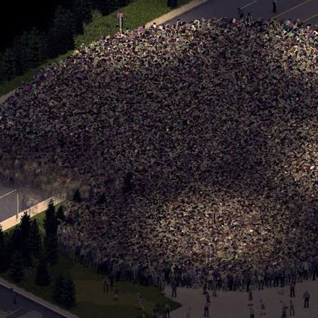
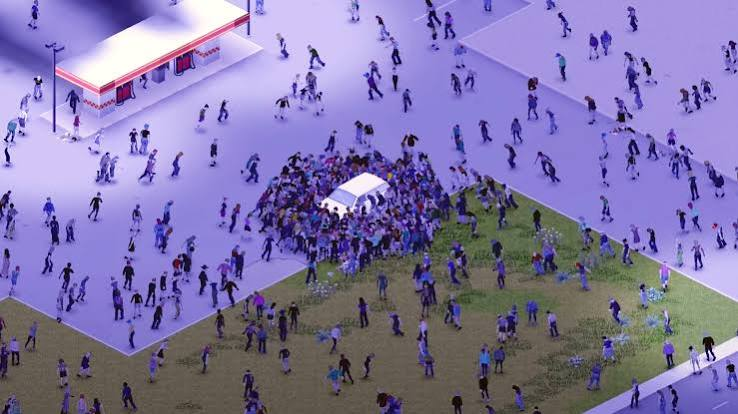
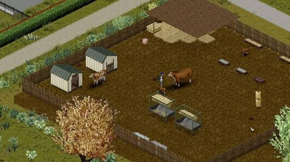
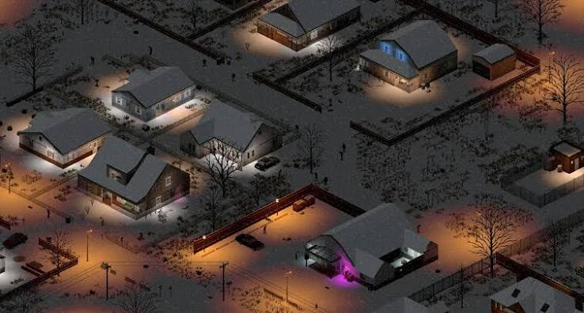

Início › Fotos
Fotos
Capturas de tela que mostram o que Knox Country tem de melhor e de pior: hordas gigantes, bases improvisadas, fazendas e bairros inteiros sob a neve. As mesmas fotos rolam ao fundo do site, como um papel de parede. Clique em uma foto para ampliar e use as setas do teclado para passar.
Capturas de tela










Trilha de suspense
A mesma música que toca ao fundo do site. Use os controles para ouvir por aqui: a música de fundo pausa enquanto o player toca.
Fotos da comunidade
Envie a sua própria captura de tela. É preciso ter conta no site para publicar.
Só quem tem conta pode enviar fotos. Entre ou crie uma conta gratuita para publicar a sua. Qualquer pessoa pode ver as fotos abaixo.
Ninguém enviou fotos ainda. Seja o primeiro.